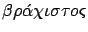
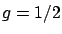
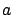
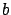
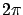
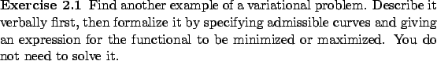

Given two fixed points in a vertical plane, we want to find a path between them such that a particle sliding without friction along this path takes the shortest possible time to travel from one point to the other (see Figure 2.4). The name ``brachistochrone" was given to this problem by Johann Bernoulli; it comes from the Greek words

(shortest) and
It is tempting to think that the solution is a straight line, but this is not the case. For example, if the two points are at the same height, then the particle will not move if placed on the horizontal line (we are assuming that the particle is initially at rest); on the other hand, traveling along a lower semicircle, the particle will reach the other point in finite time. Galileo, who studied this problem in 1638, showed that for points at different heights, it is also true that sliding down a straight line is slower than along an arc of a circle. Galileo thought that an arc of a circle is the optimal path, but this is not true either.
The travel time along a path is given by the integral of the ratio of the arclength to the particle's speed. We already know the expression for the arclength from (2.1).
To obtain a formula for the speed, we use the law of conservation of energy. Let us choose coordinates as shown in Figure 2.4: the  -axis points downward and the
-axis points downward and the  -axis passes through the initial point (the higher one). Then the kinetic and potential energy are both 0 initially, thus the total energy is always 0 and we have
-axis passes through the initial point (the higher one). Then the kinetic and potential energy are both 0 initially, thus the total energy is always 0 and we have

. Then (2.4) simplifies to
and
.Johann Bernoulli posed the brachistochrone problem in 1696 as a challenge to his contemporaries. Besides Bernoulli himself, correct solutions were obtained by Leibniz, Newton, Johann's brother Jacob Bernoulli, and others. The optimal curves are cycloids, defined by the parametric equations

and
It is interesting to note that Johann Bernoulli's original solution to the brachistochrone problem was based on Snell's law (2.2) for light refraction. In view of equation (2.5), we can treat the particle as a light ray traveling in a medium where the speed of light is proportional to the square root of the height. In a discretized version of this situation, the vertical plane is divided into horizontal strips and the speed of light is constant in each strip. The light ray follows a straight line within each strip and bends at the boundaries according to Snell's law. From this piecewise linear path, a cycloid is obtained in the limit as the heights of the strips tend to 0. This solution can be obtained more easily (and more rigorously) using methods from calculus of variations and optimal control theory.
